00读前一分钟 · 全文脉络与本篇性格
把画线句里的「本行词」挑出来，每一个都有一个日常义在等你上当：
46 marketing messages 营销信息（不是「市场消息」）· put out 推送（不是「扑灭／清除」）· unique content 特定的内容（量身定做，不是「独一无二」）· regarding 在……方面（不是「把……看作」）
47 the marketer 营销人员（不是「市场者」）· role 作用（不是「角色」）· removing jobs 岗位消失（不是「移动工作」）· creating new information 生成新信息
48 simulate 模拟（不是形近的 stimulate「刺激」）· creating … concerns 引起担忧（不是「创造关注」）
49 be starved of 缺乏（不是「挨饿」）· employ machine learning 采用机器学习（不是「雇用」）· communication 沟通方式（与「营销内容」对仗）
50 non-intrusive delivery 不扰人地推送（不是「无干扰的交付」）· sensitive to the needs 敏锐感知需求 · critical challenges 关键挑战（不是「严重挑战」）· the digital marketer 数字营销人员
⟹ 动作：动笔前先认定「这是一篇营销学的书」，然后每遇到一个熟词问一句：营销人员平时说这件事用什么词？ 「推送」「文案」「目标客户」「品牌叙事」「授权协议」——这些都是中文营销圈的现成说法，用上了就是采分点，用字面就是丢分点。
其余三句的结构是送分的：46 两个不定式一个「用于」一个「以便」，47 是 but 连起来的两个宾语从句，49 是 If 条件句加两个并列谓语。
① 2018 翻译立过「词场」四类清单（熟词换身份 · 本行词 · 进过头 · 定国别年代），2020 是词场重演；2023 整篇几乎只剩「本行词」这一类——不过这一行不是戏剧、宗教，而是营销。
② 2018 T3 患者数据与科技垄断讲的就是 ③❶ 那句「个人数据管得越来越严、自动共享越来越难」的另一面：数据被谁拿走、要不要病人同意——③❸ 的 release agreements 就是那个「同意」。
③ 2021 新题型 AI 助益企业只讲 AI 能做什么；本篇三段正好是「能做什么 → 担心什么 → 卡在哪」，是一篇现成的辩证结构（见 06 节）。
④ 同卷 T4 引用卡特尔：Scopus 这样的数据库和「被引次数」这个指标，反过来改变了科学家的行为；本篇是算法和数据反过来改变营销人员的饭碗——2023 一张卷子里有两篇在讲「工具反客为主」。
01原文精读
📄 原文是你的浏览器从原卷第 13 页识别出来的文字，下划线就是原卷的画线——考的只有带下划线的五段，淡蓝底的五句点一下跳到 02 节五步精讲；
蓝色虚线句点一下跳到 05 节长难句精析 ｜ 🟡 黄色虚线词 ＝ 重难点，点开右侧出卡片 ｜ 选中任意其他单词浮出「查有道」 ｜
每段「意」＝ 本页自写的意译（按句意转述，不是参考答案）｜「原卷对照」逐句看扫描原图、改识别错字。
⚠️ 先把五句在纸上写完再往下翻——上下文的用处是给义项定行：①❷ 的 copy、target customer group 一出现，就该知道这是营销书，46 的 messages 是「营销信息」；②❶ 的 marketing personnel 告诉你 47 的 the marketer 是人不是市场；③❹ 的 non-intrusive way of delivering 是 50 的预演——50 的主语在前一句已经说过一遍了。
① 能做什么：分析该用哪种文案打动哪群客户 → 识别生活方式、量身定做内容 → 直接生成帖子
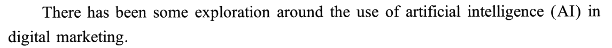
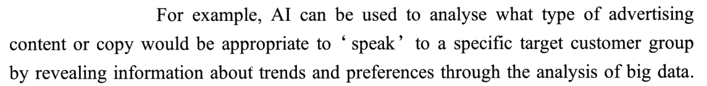
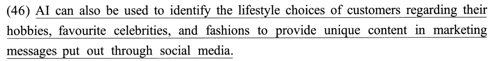
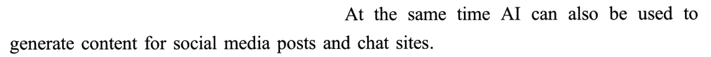
② 担心什么：人际互动交给机器 → 有人说抢饭碗、也承认省钱 → 品牌故事失控 → 算法让人更不放心
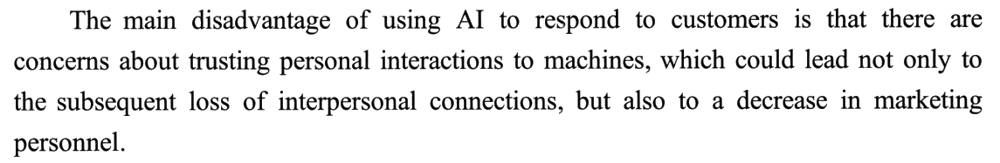
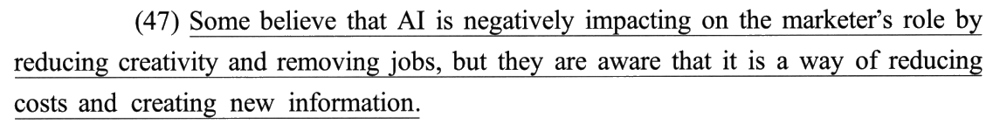
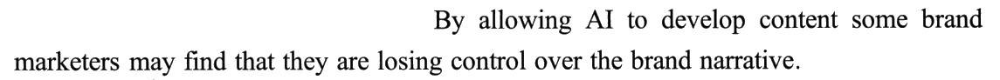
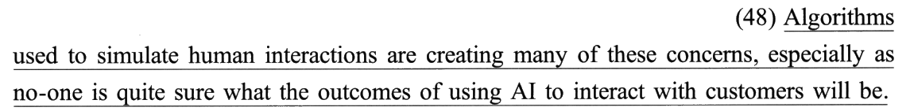
③ 卡在哪 · 往哪走：数据越来越难拿 → 客户不给数据 AI 就转不动 → 除非签授权 → 但 AI 还能不扰人地推送 → 怎么推 → 这是关键挑战
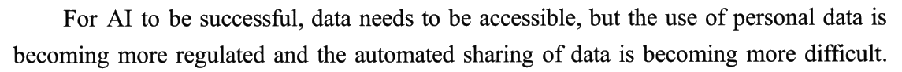
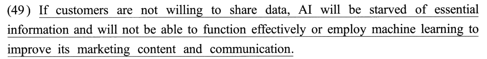
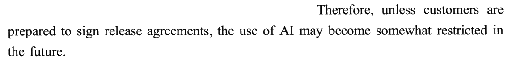
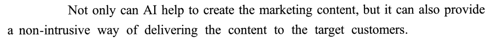
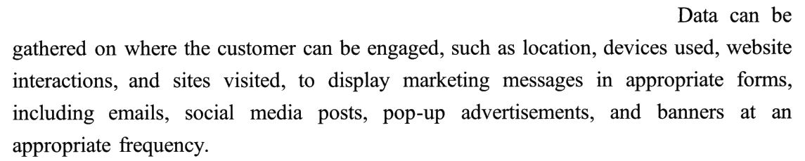
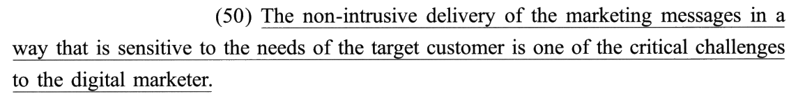
02逐句五步精讲 · 切分 → 初译 → 难点 → 词义 → 导出
每句五个标签页按考场上真实的动作顺序排；下方采分点逐个自评（点一次「得分」、再点一次「丢分」），
右上角实时结算本句得分，本页总分见下。参考译文默认折叠——先写完再翻。
📐 本年五句切 16 个采分块：12 个 0.5 分块 ＋ 4 个 1 分块，和 2014 的切法完全一样（2017–2021 都只切 12–14 块）。46、47 各「0.5 × 4」，48 是「1 ＋ 1」，49 是「0.5 ＋ 0.5 ＋ 1」，50 是「0.5 ＋ 1 ＋ 0.5」。四个 1 分块各压着一样东西：48 前半压 used to 的身份和三个本行词、48 后半压 as 与 sure 后的宾语从句、49 末块压 employ 和省略的 to、50 中块压「方式」怎么落成中文。
采分块的英文按结构关节用「｜」隔开（完整原句见每句上方的原卷句条）。「② 初译」页引自黄皮书的「初译试水」——本篇书上的初译几乎每句都故意留了一个本行词的字面义（市场者 · 关注 · 雇用 · 严重挑战），正好当反面教材；「⑤ 导出」页与折叠的参考译文是本页口径，关键词取法与黄皮书一致。
切分眼：两个 to 不是一层的——to identify 挂在 used 上（AI 能拿来做什么），to provide 挂在 identify 上（识别之后图什么）。一层译「用于」、一层译「以便」，中文自然就分出了先后。
⚠️ regarding 不是动词：它前面的 customers 后面没有谓语接，regarding 是「现在分词演变来的介词」，整块修饰 the lifestyle choices，不修饰 customers。
⚠️ put out 前面没有 be：messages put out through social media ＝ 被推送出去的信息，不是「信息发布出去了」。
📐 本句四块各 0.5：主干＋目的 1 · regarding 定语 · 目的 2 · put out 定语——结构的每一节一块，切法和切分页完全对应。
这份初译是黄皮书自己的「试水稿」，翻车点正是本篇的性格：结构大致对，义项全停在日常义。
- ⭐⭐ 两个不定式两种落法：to identify ⟹「用于识别……」；to provide ⟹「以便提供……」。 📕 难点 1：第一个修饰 used，说明 AI 能实现的作用，整体译「用于识别……」；第二个修饰 identify，说明识别的目的，可增添表示目的的「以便」。
- ⭐ regarding 定语：把「方面」放到后面——「客户在……等生活方式上的选择」。 📕 难点 2：regarding 列举客户生活方式选择的方方面面，宜译为「客户在……等生活方式上的选择」。英文是「选择 ＋ 哪些方面」，中文是「在哪些方面 ＋ 的选择」——三个并列名词夹在「在」和「上」中间，不挤。
- ⭐ put out 定语：过去分词表被动、短，前置——「通过社交媒体推送的（营销信息）」。 📕 难点 2：put out through social media 为过去分词短语，修饰 marketing messages，表达被动含义，即后者「通过社交媒体被推送」，可结合营销语境前置。
- 「向他们」是增译：provide 的对象（客户）英文没写，中文补上更顺。 📕 导出「以便在……营销信息中向他们提供特定的内容」。不补也不扣分，补了句子有着落。
- regarding —— 📕 现在分词演变而来的介词，「关于；至于」⟹ 结合上下文「在……方面」。误译栏：「把……看作；看待」——那是 regard A as B 的意思，这里后面没有 as。
- unique content —— 📕 unique 本义「独特的；独有的」；人工智能识别客户喜好、为不同的目标客户群量身打造营销内容 ⟹「特定的内容」或「专属的内容」。「独一无二的内容」意思跑偏：重点不是内容稀罕，是对得上这群人。
- marketing messages —— 📕 marketing 是动词 market 派生的名词「营销」⟹「营销信息」。「市场信息」是另一个东西（行情）。
- put out —— 📕「公布；出版；广播」⟹ 营销语境「推送」。误译栏：「清除；删除」——put out a fire（灭火）那一路。
- identify —— 「识别；确认」。书导出用「识别」：AI 是从数据里认出来，不是去核实。
- lifestyle choices —— 「生活方式（上的）选择」——爱好、追哪个明星、穿什么，都是一种选择。
| 疑难点 | 正译 | 误译 |
|---|---|---|
| regarding | 在……方面；包括 | 把……看作；看待 |
| put out | 推送；投放 | 清除；删除 |
人工智能还可用于识别客户在爱好、喜欢的名人、时尚等方面的生活方式选择，以便在通过社交媒体推送的营销信息中向他们提供特定的内容。
导出动作三个：① 两个 to 分层：「用于识别」＋「以便提供」；② 两个后置定语各归各位：regarding 落「在……等方面的」放「选择」前，put out 落「推送的」放「营销信息」前；③ 三个本行词：营销信息 · 推送 · 特定内容。
检查一句：译文里有没有「市场」「放出」「独特」？有一个，就是那一块丢了。
黄皮书导出：人工智能还可用于识别客户在爱好、喜欢的名人、时尚等生活方式上的选择，以便在通过社交媒体推送的营销信息中向他们提供特定的内容。
切分眼：两个代词，各回指一个东西——they ＝ 句首的 Some（同一批人），it ＝ AI。it 在中文里要还原成「人工智能」，否则「这是一种降低成本的方式」的「这」会被读成「这件事（抢饭碗）」。
⚠️ but 前后是同一批人在说两面话：前面「认为有害」，后面「也承认有用」——中文用「但他们也认识到」，「也」字把让步的味道带出来（📕 导出就加了「也」）。
📐 本句四块各 0.5：主句＋第一层宾从 · by 方式状语 · but they are aware · 第二层宾从。「but they are aware」四个词单独一块——别嫌它短，aware 写成「意识到」「认识到」「明白」都行，写成「担心」就丢。
这份初译是黄皮书自己的「试水稿」——把 marketer 字面译成「市场者」，正是书上疑难表要纠正的那一格。
- ⭐⭐ by 方式状语提前：「人工智能（通过）……从而对……产生负面影响」。 📕 难点 1：宾从主结构 AI is … impacting on … by …，方式状语 by 位于句末，按汉语表达习惯将其提至所修饰词之前。⟹「人工智能使创造力下降、工作岗位消失，从而对营销人员的作用产生负面影响」——先说怎么做，再说结果。
- ⭐ negatively impacting on：副词转形容词——「对（……）产生负面影响」。 📕 难点 2：副词 negatively 修饰现在进行时谓语 is … impacting on，强调影响的性质是负面的，翻译时可转为形容词。（进行时不必硬译「正在」，书导出没有。）
- ⭐ it is a way of doing：of 引后置定语 ⟹「做某事的手段」。 📕 难点 3：介词 of 引导后置定语修饰 a way，说明是「做某事的手段」；of 后两个动作分别译「降低成本」「生成新信息」。
- by 后两个动名词：转成两个主谓短语「创造力下降、工作岗位消失」。 英文是「AI 减少创造力、去掉工作」（AI 作逻辑主语），📕 导出改成「使创造力下降、工作岗位消失」——主语换成被影响的东西，读起来更像中文。
- believe —— 📕 这里用于引出部分人的观点 ⟹「认为」。「相信」也不算错，但「有些人相信」后面接一个负面判断，语气偏了。
- role —— 📕 常见义「角色；地位」，此处用于强调 marketer 的功能和表现，而非其身份 ⟹ 僻义「作用」。
- creating（new information）—— 📕 基础义「创造；创作」，结合「人工智能」语境 ⟹「生成；开发」。本篇三处 create 两种译法：47 creating new information「生成」新信息 · ③❹ create the marketing content 📕 也是「生成」营销内容 · 只有 48 creating concerns 是「引起」担忧——跟「信息、内容」搭配是生成，跟「担忧」搭配是引起，见 03 节。
- marketer —— 📕 疑难表：正「营销人员」，误「市场者」。②❶ 刚说过 marketing personnel（营销人员），这里是同一批人。
- removing jobs —— 📕 疑难表：正「取消工作岗位；使工作岗位消失」，误「移动工作」（remove 的「搬走」义）。（书表头印作 removing job，原卷是复数 jobs。）
- creativity —— 「创造力」，不是「创新」（innovation）。
| 疑难点 | 正译 | 误译 |
|---|---|---|
| marketer | 营销人员 | 市场者 |
| removing jobs | 取消工作岗位；使工作岗位消失 | 移动工作 |
有些人认为，人工智能使创造力下降、工作岗位消失，从而削弱了营销人员的作用；但他们也认识到，人工智能是一种降低成本、生成新信息的手段。
导出动作四个：① by 状语提前，用「从而」接结果；② negatively impacting on 落「削弱／产生负面影响」；③ it 还原成「人工智能」；④ but 后加「也」。
「削弱了……的作用」与书的「对……的作用产生负面影响」等价，前者更短。
检查一句：「市场者」「角色」「移动」有没有出现？后半句的主语是不是「人工智能」而不是「这」？
黄皮书导出：有些人认为，人工智能使创造力下降、工作岗位消失，从而对营销人员的作用产生负面影响；但他们也认识到，人工智能是一种降低成本和生成新信息的手段。
切分眼：谓语是 are creating，不是 used。Algorithms used to simulate … 如果把 used 当谓语，读成「算法过去常常模拟人类互动」，后面的 are creating 就没处放了——一个句子出现两个谓语形式，先确认哪个是真的。
⚠️ 四个 used to 只有两种身份：①❷ ①❸ ①❹ 都是 can (also) be used to do（可用于），48 是 名词 ＋ used to do（用于……的名词）；第三种 used to do（过去常常）和第四种 be used to doing（习惯于）本篇都没出现。
⚠️ what 从句是倒装吗？不是——what the outcomes … will be 是正常语序的名词性从句，what 作表语，主语是长长的 the outcomes of using AI to interact with customers，系动词 will be 被挤到最后。
📐 本句两块各 1 分：逗号前一整块、逗号后一整块——前一块压着 used to 的身份 ＋ simulate／creating／concerns 三个词，任何一个翻车这 1 分都悬。
这份初译是黄皮书自己的「试水稿」——本篇最典型的一份：结构满分、词义一挂就错。
- ⭐⭐ used to simulate …：看作省略了 that are 的定语从句，前置——「用于模拟人类互动的（算法）」。 📕 难点 1：后置定语也可看作省略了引导词 that 和 be 动词的定语从句（that are used to simulate …），翻译时可将其前置于被修饰的核心名词「算法」之前，译为「的」字结构。
- ⭐⭐ especially as … sure what …：⟹「尤其是（因为）对于……还没人有十足的把握」。 📕 难点 2：由主从句语义可知，状语从句实际在阐述主句「算法引起担忧」的原因，故引导词 as 应表示原因，可译为「因为」或省译；系表结构 is … sure 加名词性从句 what … will be 为部分形容词（sure、certain、curious 等）的特殊用法，名词性从句可视为形容词后接的逻辑宾语。
- ⭐ 宾从主语太长：先把它译成一个整体「使用人工智能与客户互动的结果」，再接「如何」。 📕 难点 3：the outcomes 由较长的介词短语 of using AI to interact with customers 修饰；what the outcomes … will be 可译为「……结果会是什么／结果如何」。
- quite 管的是 sure 的程度：no-one is quite sure ＝「谁也没有十足的把握」，不是「没有人很确定」。 否定词 no-one ＋ quite ＝ 部分否定的味道：不是完全不知道，是拿不准。📕 用「还没人有十足的把握」正好。
- simulate —— 📕「模拟；模仿」，注意不要与形近词 stimulate（刺激；激励）混淆。误译栏：「促进；激励」。本篇疑难表 11 行里唯一一行是形近词错，其余全是熟词错。
- creating —— 📕 此处用于描述人工智能使人们产生的反应，应取其僻义「引起，产生（感觉或印象）」。误译栏：「创造；创建」。
- concerns —— 📕 名词 concern 的复数，可表「关心；关注」或「担忧；顾虑」；结合前文「人工智能正产生负面影响」⟹「担忧；顾虑」。these concerns 回指 ②❶ 的 there are concerns about trusting …——第一次出现就是「担忧」。
- especially as —— 「尤其是因为」。as 在这里不是「当……时」「正如」——它后面是一个解释原因的完整句子。
- outcomes —— 「结果；后果」。
- interact with —— 「与……互动；与……交互」。书正文用「互动」、导出用「交互」，都行。
| 疑难点 | 正译 | 误译 |
|---|---|---|
| simulate | 模拟；模仿 | 促进；激励 |
| creating | 引起；产生 | 创造；创建 |
| concerns | 担忧；顾虑 | 关心；关注 |
用于模拟人类互动的算法正在引起许多这样的担忧，尤其是因为对于使用人工智能与客户互动会有怎样的结果，还没有人有十足的把握。
导出动作三个：① used 定语前置「用于模拟……的算法」；② creating concerns 落「引起担忧」；③ as 译「因为」（或省）、sure 后的从句提到「对于……」里，句末收在「把握」上。
本页留了「因为」——📕 导出省掉了（「尤其是对于……」），两种都对；考场上留着更保险：阅卷人一眼看见原因关系。
检查一句：主语前面是不是「用于……的」？如果写成「算法过去常常……」，整句结构塌了。
黄皮书导出：用于模拟人类互动的算法正在引起许多这样的担忧，尤其是对于使用人工智能与客户交互的结果如何，还没人有十足的把握。
切分眼：两层并列，各管一层——and 连两个谓语（will be starved … and will not be able …），or 连 able 后面的两个不定式（function … or employ …）。employ 前面省了 to：它和 function 平级，都受 not be able to 管——所以 employ 也要否定：「也无法采用」，不是「或者采用」。
⚠️ or 在否定句里落「也不」：not able to A or B ＝ 既不能 A 也不能 B。书的初译「无法有效运行，或者雇用机器学习」——or 照字面译成「或者」，否定被丢了，意思变成「或者可以雇用」。
📐 本句三块：0.5 ＋ 0.5 ＋ 1——末块 1 分整整压在 and 之后：省略的 to、否定的范围、employ 的义项、communication 的增译，全在这一块。
这份初译是黄皮书自己的「试水稿」。
- ⭐⭐ 条件句的衔接：主句增「便／就」——「如果……就……」。 📕 难点 1：本句由 If 引导的条件状语从句引出某种假设，再由主句表示基于这种假设下的反馈，构成条件句；为了体现这种条件关联，主句的翻译中应增译表示顺承的「便；就」。
- ⭐⭐ 两组并列：第一组暗含递进 ⟹「就会缺乏……就会无法……」；第二组省 to ⟹「无法有效运行，也无法采用……」。 📕 难点 2：第一组 will be starved … and will not be able … 暗含递进关系（先缺信息，因而转不动）；第二组 to function effectively or (to) employ machine learning … 省略了相同的 to，阐述人工智能在哪两个方面无法实现其功用，可与 not be able 合译为「无法有效运行，也无法采用机器学习……」。
- its 回指 AI：「改善其营销内容」——「其」比「它的」更书面。
- be starved of … —— 📕 starve 常见义「（使）挨饿，饿死」，此处取僻义「使极其缺乏；使迫切需要」 ⟹「缺乏……」。误译栏：「使……挨饿；断绝……」。⭐ 这个比喻接着 ③❶ 的 data needs to be accessible：数据是 AI 的口粮。
- employ —— 📕 常见义「雇用」，此处与「机器学习」这一复杂技术搭配，取僻义「采用；利用」。employ a method／technique／strategy 都是「采用」。
- communication —— 📕 为了行文工整，与 marketing content「营销内容」这一表述形成对仗，可适当增译为「沟通方式」。
- essential information —— 「基本信息」（📕）或「必要信息」。essential ＝ 少了不行，两种都对。
- function effectively —— 「有效运行；有效运转」。function 作动词，不是「功能」。
- be willing to —— 「愿意」；not willing ＝ 不愿。
| 疑难点 | 正译 | 误译 |
|---|---|---|
| be starved of … | 缺乏…… | 使……挨饿；断绝…… |
| employ | 运用；利用 | 雇用 |
如果客户不愿分享数据，人工智能就会缺乏必要的信息，从而无法有效运行，也无法采用机器学习来改善其营销内容和沟通方式。
导出动作四个：① 主句加「就」；② starved of 落「缺乏」，employ 落「采用」；③ or 在否定里落「也无法」；④ communication 增译「沟通方式」与「营销内容」对仗。
📕 导出写「就会缺乏……，就会无法……，也无法……」两个「就会」把递进写成了排比；本页把第二个换成「从而」，递进（缺信息 ⟹ 转不动）更明。两种都不影响得分。
检查一句：employ 前面有没有「无法」管着？「或者」「雇用」出现了没有？
黄皮书导出：如果客户不愿分享数据，人工智能就会缺乏基本信息，就会无法有效运行，也无法采用机器学习来改善其营销内容和沟通方式。
切分眼：谓语 is 要一直等到第 21 个词才出现——主语一口气挂了 of 短语、in 短语、that 定从三层。先找 is，再往回切，就不会把 that 从句的 is sensitive 当成主句谓语。
⭐ delivery 是「藏着动词的名词」：The non-intrusive delivery of the marketing messages ＝ deliver the marketing messages non-intrusively（不扰人地推送营销信息）——形容词 non-intrusive 跟着变成副词，of 后面变成宾语。这是名词化还原（2011 页的老机制）。
⚠️ ③❹ 已经说过一遍：a non-intrusive way of delivering the content to the target customers——同一件事，前一句用动名词，50 换成名词。前一句读懂了，50 的主语就不用猜。
📐 本句三块：0.5 ＋ 1 ＋ 0.5——中间那 1 分是「方式」：in a way that is sensitive to … 怎么落成中文，是本句唯一需要动刀的地方。
这份初译是黄皮书自己的「试水稿」——「严重挑战」与「体恤需求」正是书上疑难表的两格误译。
- ⭐⭐ 主语还原成动作：delivery ⟹「推送」，of 短语 ⟹ 宾语，in a way ⟹ 方式状语——「（通过……的方式，）从而不扰人地推送营销信息」。 📕 难点 1：主语 The non-intrusive delivery 由两个后置定语 of the marketing messages、in a way … 共同修饰，其中 delivery 具有动作含义，宜按汉语表达习惯转译为动词「推送」，两个后置定语可分别处理为动词的宾语和方式状语。
- ⭐⭐ 定语从句译成动词短语，way 省掉：「敏锐感知目标客户需求」。 📕 难点 2：引导词 that 在从句中充当主语，指代 way；从句具体说明以怎样的方式推送信息，可将其译为动词短语「敏锐感知目标客户需求」，并相应将其前概括性名词 way 省译。
- 主语译成动词短语后，「是」直接接上：「……，是数字营销人员面临的关键挑战之一」。 中文允许动词短语作主语（「按时完成任务是……」），不必加「对……进行……」把它名词化回去。to the digital marketer 落「（数字营销人员）面临的」。
- non-intrusive —— 📕 借前文 in appropriate forms、at an appropriate frequency 可大致推出：前缀 non-（表否定）＋ intrusive ⟹「没有侵扰的」，简洁译为「不扰人的」。⭐ ③❹ 已出现过一次（a non-intrusive way of delivering），本句是第二次。
- sensitive to the needs —— 📕 sensitive to sth 可表「体恤某事」或「对某事敏感」，但在营销语境下宜译「对需求敏感」或「敏锐感知需求」。
- critical challenges —— 📕 critical 可表「极重要的；关键的」或「严重的；危急的」，文中意在强调这些挑战对数字营销领域的未来发展有重要影响 ⟹「关键挑战」。
- delivery —— 「递送；交付」⟹ 营销信息语境「推送」。和 46 的 put out 落到同一个中文词——本篇两处「推送」，英文换了两个说法。
- the digital marketer —— 「数字营销人员」。单数 ＋ the 是泛指这一类人。
- target customer —— 「目标客户」，营销学的固定说法。
| 疑难点 | 正译 | 误译 |
|---|---|---|
| sensitive to the needs | 对需求敏感；敏锐感知需求 | 体恤需求 |
| critical challenges | 关键挑战 | 严重挑战 |
以敏锐感知目标客户需求的方式不扰人地推送营销信息，是数字营销人员面临的关键挑战之一。
导出动作三个：① delivery 还原成动词「推送」，non-intrusive 落成状语「不扰人地」；② in a way that … 落成方式状语；③ critical 落「关键」。
📕 导出写「敏锐感知目标客户需求，从而不扰人地推送营销信息」——本页商榷这个「从而」：原文 in a way that is sensitive to … 是推送的方式（怎样推），「从而」把它写成了因果（先感知、所以不扰人）。意思相去不远、采分不受影响，但「以……的方式」更贴原文。
检查一句：译文里还有没有「对……进行……传递」？有，就是名词没还原。
黄皮书导出：敏锐感知目标客户需求，从而不扰人地推送营销信息，是数字营销人员面临的关键挑战之一。
03⚠️ 本篇内核：营销行话清算表（45 处）
黄皮书五张「正译 vs 误译」表（11 行）＋ 五节「词义确定」＋ 段落对照译文里的关键词全部收进——45 行的「正译」全部能在书上找到出处（判据栏标 📕：疑难表／词义确定／难点／导出／段落对照译文），画线句之外的本行词取自段落对照译文；「误译」栏书上没列的格子，是本页补的最常见错法。
点「默写模式」把「正译」栏盖住，逐格点开自查。
⚠️ 本表几乎每一行的「误译」都不是生词错，是日常义：市场者、关注、创造、雇用、挨饿、严重……——自查时先遮住中文，先问「营销人员会怎么说这件事」，再说中文。
📌 本表最值得记的一组：put out ／ delivery ／ delivering ＝ 推送（同一件事三种英文）· create 三处两译（生成信息 · 生成内容 · 引起担忧）· employ machine learning ＝ 采用。
| 词／表达 | 正译（本文语境） | 误译（最常见） | 判据 |
|---|---|---|---|
| marketer | 营销人员 | 市场者；营销商 | 47 📕 疑难表；②❶ 已说 marketing personnel |
| the digital marketer | 数字营销人员 | 数字市场 | 50 📕 导出；单数＋the 泛指一类人 |
| marketing messages | 营销信息 | 市场消息 | 46 📕 词义 (3) |
| put out | 推送；投放 | 清除；删除；扑灭 | 46 📕 疑难表 |
| regarding | 在……方面；包括 | 把……看作；看待 | 46 📕 疑难表；后面没有 as |
| unique content | 特定的内容；专属的内容 | 独一无二的内容 | 46 📕 词义 (2)：为不同客户群量身打造 |
| identify | 识别 | 鉴定；认同 | 46 📕 导出 |
| role | 作用 | 角色；地位 | 47 📕 词义 (2)：强调功能而非身份 |
| removing jobs | 使工作岗位消失；取消岗位 | 移动工作 | 47 📕 疑难表（书印 removing job） |
| believe | 认为 | 相信；信仰 | 47 📕 词义 (1)：引出部分人的观点 |
| creating new information | 生成新信息 | 创作新信息 | 47 📕 词义 (3) |
| negatively impacting on | 对……产生负面影响；削弱 | 负面地影响着 | 47 📕 难点 (2)：副词转形容词 |
| simulate | 模拟；模仿 | 促进；激励（看成 stimulate） | 48 📕 疑难表——本篇唯一的形近词错 |
| creating … concerns | 引起担忧 | 创造；创建 | 48 📕 疑难表：僻义「引起，产生（感觉）」 |
| concerns | 担忧；顾虑 | 关心；关注 | 48 📕 疑难表；回指 ②❶ there are concerns |
| Algorithms used to … | 用于……的算法 | 算法过去常常…… | 48 📕 结构：过去分词后置定语 |
| especially as | 尤其是因为（可省） | 尤其是当……时 | 48 📕 难点 (2)：as 表原因 |
| no-one is quite sure | 还没人有十足的把握 | 没有人很确定 | 48 📕 导出：quite 管程度 |
| be starved of | 缺乏 | 使……挨饿；断绝 | 49 📕 疑难表：僻义「使极其缺乏」 |
| employ | 采用；运用；利用 | 雇用 | 49 📕 疑难表：与「机器学习」搭配 |
| communication | 沟通方式 | 传播；交流 | 49 📕 词义 (3)：与「营销内容」对仗而增译 |
| function effectively | 有效运行 | 有效的功能 | 49 📕 导出；function 作动词 |
| not able to A or B | 既无法 A，也无法 B | 无法 A，或者 B | 49 📕 难点 (2)：省略 to、否定管到底 |
| non-intrusive | 不扰人的 | 侵入式的；无干扰的 | 50 📕 词义 (1)：non- 表否定 |
| delivery (of the messages) | 推送 | 交付；分娩 | 50 📕 难点 (1)：名词还原成动词 |
| sensitive to the needs | 对需求敏感；敏锐感知需求 | 体恤需求 | 50 📕 疑难表 |
| critical challenges | 关键挑战 | 严重挑战；批判性挑战 | 50 📕 疑难表 |
| target customer (group) | 目标客户（群体） | 目标顾客团 | ①❷ 📕 段落译文「特定的目标客户群体」 |
| copy | 文案 | 复制；副本 | ①❷ 📕 段落译文「广告内容或文案」 |
| ‘speak’ to | 与……「对话」；打动 | 对……说话 | ①❷ 📕 段落译文保留引号「对话」 |
| preferences | （用户）偏好 | 优先权 | ①❷ 📕 段落译文「用户偏好」 |
| posts | 帖文；帖子 | 邮件；职位 | ①❹ 📕 段落译文「社交媒体帖文」 |
| respond to customers | 回应客户 | 对客户负责 | ②❶ 📕 段落译文 |
| trusting … to machines | 把……交托给机器 | 信任……对机器 | ②❶ 📕 段落译文「将人际互动交托于机器」：trust A to B ＝ 托付 |
| marketing personnel | 营销人员 | 市场个人 | ②❶ 📕 段落译文「营销人员的减少」 |
| brand narrative | 品牌叙事 | 品牌故事书 | ②❸ 📕 段落译文「对品牌叙事的掌控」 |
| develop content | 开发内容 | 发展内容 | ②❸ 📕 段落译文 |
| accessible | （数据）可访问的；拿得到的 | 无障碍的 | ③❶ 📕 段落译文「具有可访问性」 |
| more regulated | 受到愈发严格的监管 | 更有规律 | ③❶ 📕 段落译文 |
| release agreements | 数据授权协议 | 释放协议；发布协议 | ③❸ 📕 段落译文：release ＝ 放行、授权 |
| somewhat restricted | 受到一定程度的限制 | 有些被禁止 | ③❸ 📕 段落译文 |
| create the marketing content | 生成营销内容 | 创造营销内容 | ③❹ 📕 段落译文「帮助生成营销内容」 |
| where the customer can be engaged | 客户何种情况下可能参与（品牌）互动 | 客户在哪里订婚／被雇用 | ③❺ 📕 段落译文：engage ＝ 吸引参与 |
| pop-up advertisements · banners | 弹出式广告 · 横幅广告 | 跳出的广告 · 旗帜 | ③❺ 📕 段落译文 |
| at an appropriate frequency | 以适当的频率 | 在合适的频道 | ③❺ 📕 段落译文 |
04考场流程：翻译五步法（20 分钟怎么花）
- 通读全文 ＋ 定行（2 分钟）—— 三段读一遍，圈本行词：①❷ 一句就有 advertising content · copy · target customer group · big data——四个词连在一起，这是营销书。往下再圈 social media · marketing personnel · brand narrative · release agreements · pop-up advertisements——全篇就是一张营销圈的词表。 这一步多花 30 秒，在草稿纸上写一句「营销」，后面每碰到一个熟词，先对着这两个字问一遍。
- 结构切分（顺手找真谓语）—— 先找谓语动词定主干。本篇只有两句的谓语要找：48 的 are creating（used 不是）、50 的第二个 is（第一个 is 在 that 从句里）。 其余三句：46 两个 to 分层、47 两个 that 宾从、49 If ＋ 两层并列（and 连谓语、or 连不定式）。
- 初译试水（每句 45 秒）—— 按块直译。本篇初译阶段允许字面，但要在每个熟词下面点一个点，标记「这里待定」。 黄皮书五句初译里每句都留着一个字面义：市场者（47）· 创造关注（48）· 雇用机器学习（49）· 严重挑战（50）· 市场信息／放出去（46）——点了点的地方，就是下一步要换的地方。
- 词义确定（每句 1 分钟）—— 专查点了点的熟词：marketer · role · simulate · creating · concerns · starved · employ · communication · critical · sensitive。判据只有一条：营销人员平时这么说吗？
- 译文导出（每句 45 秒）—— 两个 to 分层（46）；by 状语提前、it 还原（47）；used 定语前置（48）；主句加「就」、or 落「也无法」（49）；delivery 还原成「推送」（50）。
本篇第二句（①❷）就把行亮出来了：advertising content or copy · target customer group。
⟹ 动作：读第一遍时找出「这一行的三个标志词」写在草稿纸角上；之后每个熟词都先过这三个词的「滤镜」。 （2018 页「词场」讲的是同一件事；本篇只剩「本行词」一类，所以更纯。）
反过来也成立：英文同一个 create，中文两个词（信息、内容是「生成」，担忧是「引起」）。
⟹ 动作：英文换词不等于中文换词，中文换词也不等于英文换词——每次只看这个词在这句里跟谁搭配（推送「信息」、引起「担忧」）。
③❹ a non-intrusive way of delivering the content 是它的动名词版——考卷把答案提前一句给你了。
⟹ 动作：主语是「形容词 ＋ 动作名词 ＋ of ＋ 名词」时，一律改成「副词 ＋ 动词 ＋ 宾语」再往下译（2011 页「名词化」的老规矩）。
① 「字面义」黑名单：市场者 · 角色 · 移动工作 · 创造关注 · 刺激 · 挨饿 · 雇用 · 严重挑战 · 清除——出现一个改一个；
② 结构两处：48 有没有写成「算法过去常常」；49 employ 前面有没有「无法」；
③ 指代一处：47 后半句的「它／这」是不是人工智能。
05非画线长难句 6 句（画线句之外，这几句也是考点）
黄皮书本篇没有长难句栏目，以下 100% 自选自撰，译文为本页自译（黄皮书段落对照译文只作交叉参考）。选的标准：这一句要么给画线句定了义项或指代，要么自己就是一个结构样本。原句与 01 节同一条（本机识别成文字，可切回原卷）。
📌 本篇最长的两句 ②❶ 与 ③❺ 各 41 词，都不在画线内；画线句里最长的是 49（34 词）——全文 14 句，平均 29.2 词一句。
⭐ by 和 through 是两层手段：大数据分析 → 揭示趋势与偏好 → 判断文案适不适合。中文按先后排：「借大数据分析揭示……，从而判断……」——和 47 的 by 一样，手段提前、结果殿后。
⚠️ ‘speak’ to 带引号：不是真的说话，是「对上胃口、打动」——📕 段落译文保留引号译「对话」。这一句是全文的「定行句」：copy、target customer group 一出现，后面每个熟词都该往营销上靠。
⭐ which 指代整件事（把人际互动交给机器），不是 machines——📕 段落译文译成「因为这不仅可能导致……」，把非限制性定语从句处理成原因分句。
⭐ 这一句给 47、48 定了两个词：concerns 第一次出现就是「顾虑」（48 的 these concerns 回指它）；marketing personnel 是「营销人员」（47 的 the marketer 是同一批人）。
⚠️ trust A to B ＝「把 A 托付给 B」，不是「信任 A 对 B」。
⭐ For AI to be successful ＝「人工智能要想成功」——for sb to do 放句首表条件，中文落「要想……就……」。
⭐ 这一句是 49 的前提：数据「得拿得到」→ 但「越来越难拿」→（49）客户不给，AI 就缺信息。is becoming more regulated 是「越来越受监管」，进行时 ＋ 比较级 ＝ 一个正在加剧的趋势。
⭐ unless 落「除非……否则……」，📕 段落译文就是这么配的；may 与 somewhat 两个词一起把语气压软——「可能会受到一定程度的限制」，两个护栏都要译出来（2017 页「刻度」的老规矩）。
⚠️ release agreements 不是「释放协议」——release 是「放行、授权（使用个人数据）」，📕 译「数据授权协议」。
⭐ 这是 50 的预演：a non-intrusive way of delivering ＝ 50 的 the non-intrusive delivery … in a way。考卷把 50 主语的意思提前一句用动名词说了一遍——先在这里把「不扰人地推送」想好，50 就只剩搬过去。
⚠️ 倒装不影响翻译：中文照常「人工智能不仅……还……」。
⭐ 两个四项列举是这句的骨头：such as 列「数据是什么」，including 列「形式有哪些」——中文用破折号或括号把列举收起来，主线「收集数据 → 展示信息」才不被打断（📕 段落译文给第二个列举加了括号）。
⚠️ at an appropriate frequency 修饰 display，不修饰 banners——「以适当的频率展示」；engaged 是营销词「被吸引参与互动」，不是「订婚」「被雇用」。
06写作素材抽取（话题：人工智能 · 科技与就业 · 数据隐私 · 技术的两面性）
本篇是一段教科书式的利弊分析：能做什么 → 担心什么 → 卡在哪 → 怎么做好，正好是大作文「辩证段」的现成骨架。 每组给「本文短语 → 可迁移骨架 → 自拟例句」；例句全部自拟，只借骨架。⚠️ 本年作文题本轮未看（作文仍全盲），翻译与大作文撞不撞题留到作文页核。
骨架：Some believe that X is doing harm to Y, but they are aware that it is a way of doing Z.
自拟：Some believe that short videos are harming our ability to concentrate, but they are aware that they are a cheap way of learning new skills.（有人认为短视频在损害我们的专注力，但他们也承认，短视频是学习新技能的一种廉价途径。）
用在「新事物利弊」类大作文的第二段：一句话同时摆出正反两面，比 On the one hand … on the other hand 更自然。
骨架：The main disadvantage of doing X is that …, which could lead not only to A but also to B.
自拟：The main disadvantage of online classes is that students lack face-to-face contact, which could lead not only to poor concentration but also to loneliness.（网课最大的缺点是学生缺少面对面的交流，这不仅可能导致注意力下降，还可能导致孤独感。）
which 指代前面整件事，后接 not only … but also 一口气给两个后果——一句话就是一个完整的「缺点 ＋ 后果」论证。
骨架：For X to be successful, Y needs to be …
自拟：For a reading plan to be successful, it needs to be realistic.（一个读书计划要想成功，就得切实可行。）
for sb／sth to do 放句首，比 If X wants to succeed 更紧凑、更书面；作文「提建议」段的开头句。
骨架：Unless X is prepared to do Y, Z may become somewhat …
自拟：Unless parents are prepared to put down their phones, family dinners may become somewhat silent.（除非父母愿意放下手机，否则家里的晚饭可能会变得有些沉默。）
be prepared to do ＝「愿意（做出让步）」；may ＋ somewhat 两个护栏让结论不说死——阅卷人喜欢有分寸的句子。
骨架：Not only can X help to do A, but it can also do B.
自拟：Not only can volunteering help to build a community, but it can also teach young people responsibility.（志愿服务不仅能帮助建设社区，还能教会年轻人担当。）
Not only 句首倒装是大作文最稳的「高级句」之一，记住倒装只倒一个助动词（can），后半 but … also 照常语序。
骨架：Doing X in a way that is sensitive to Y is one of the critical challenges to Z.
自拟：Caring for the elderly in a way that is sensitive to their dignity is one of the critical challenges to an ageing society.（以顾及老人尊严的方式照料他们，是老龄化社会面临的关键挑战之一。）
作文最后一段的总括句；动名词作主语 ＋ in a way that is sensitive to … 一下子把「要做什么」和「怎么做」都交代了。
⚠️ be starved of 是比喻，作文里用一次就够：Many rural schools are starved of good teachers.（许多乡村学校缺少好老师。）
07词汇卡
点任意一张出详卡（释义 · 原文语境 · 怎么记 · 同类词 · 易混辨析）。 熟词僻义与短语标签的那些才是本篇真正的失分点；写作✍︎标签的可直接进作文。 正文里带虚线的词也可直接点；选中任意单词可查有道。